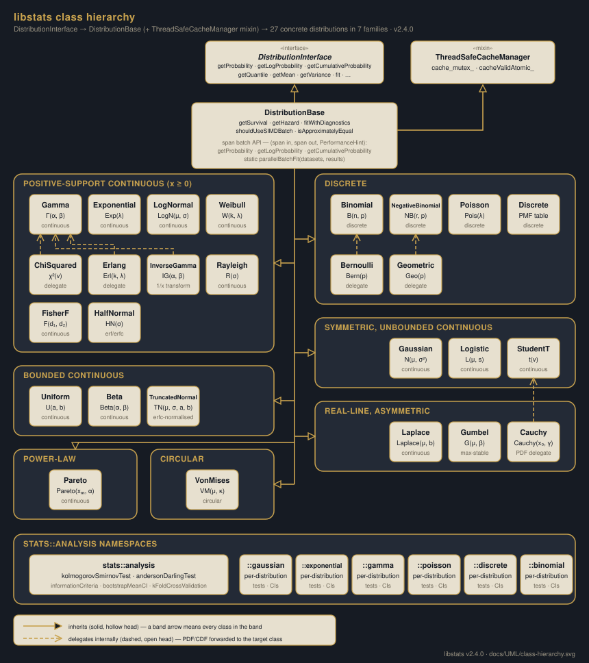
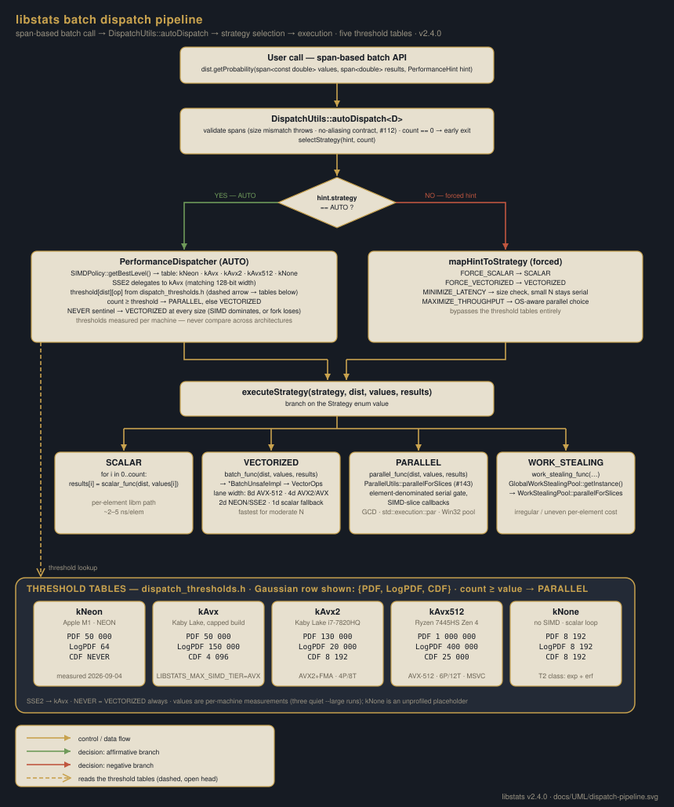
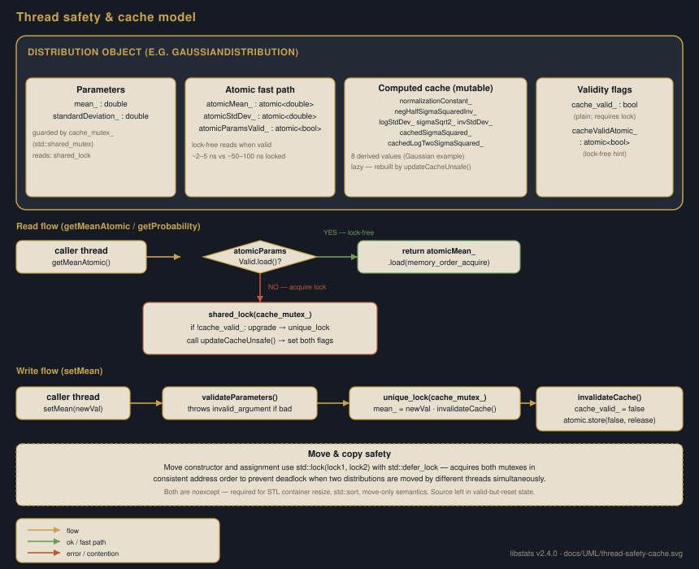
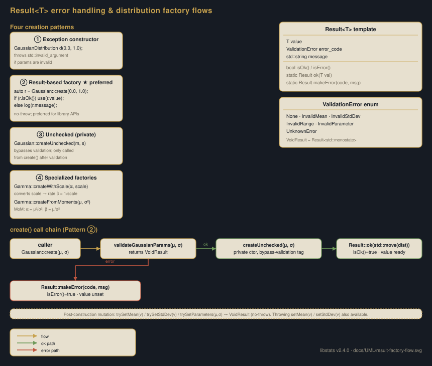

Four structural and process-flow diagrams covering the class hierarchy, batch dispatch pipeline, thread-safety model, and Result<T> factory pattern.
Full inheritance tree from DistributionInterface through DistributionBase to all 16 concrete distributions, colour-coded by family. Includes ThreadSafeCacheManager mixin and the stats::analysis namespace.
End-to-end flow from a span-based batch call through DispatchUtils::autoDispatch, strategy selection (AUTO vs. forced hint), threshold table lookup, and all four execution strategies: SCALAR, VECTORIZED, PARALLEL, WORK_STEALING.
The dual-flag pattern (cache_valid_ + cacheValidAtomic_), lock-free fast path vs. shared/unique-lock slow path, lazy cache rebuild, write → invalidate cycle, and deadlock-safe move semantics.
The four distribution creation patterns (exception constructor, Result factory, unchecked private, specialised factories), the create() → validate → ok/error branch, and the trySet* post-construction mutation API.
DistributionInterface (pure abstract) → DistributionBase (+ ThreadSafeCacheManager mixin) → 16 concrete distributions grouped by family. The span-based batch API and stats::analysis namespace are shown at the bottom.

A call to any span-based batch method flows through DispatchUtils::autoDispatch, which either runs PerformanceDispatcher (AUTO mode: SIMD capability + threshold table lookup) or maps a forced PerformanceHint directly to a strategy. The four execution strategies are SCALAR, VECTORIZED (SIMD via VectorOps), PARALLEL (GCD / std::execution::par / Win32 Thread Pool), and WORK_STEALING. Threshold tables are architecture-specific (kNeon, kAvx2, kAvx512, kNone).

Each distribution object holds canonical parameters (guarded by std::shared_mutex), lock-free atomic copies for hot-path reads, a mutable computed cache of derived values, and two validity flags (plain bool + atomic bool). Reads check the atomic flag first (~2–5 ns); on miss they fall through to shared_lock and lazy cache rebuild. Writes acquire unique_lock, update the parameter, and invalidate both flags. Move operations use std::lock() with defer_lock to prevent deadlock.

Distributions can be created four ways: exception-throwing constructor, no-throw Result<T> factory (preferred), private unchecked constructor (called only after validation), and specialised factories such as createWithScale or createFromMoments. The create() call chain runs validation, branches to makeError on failure or createUnchecked → Result::ok on success. Post-construction parameter changes use the trySet* family (returning VoidResult) or the throwing setters.
